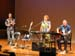

DAVID G. SIMPSON
Personal Web Site
JAPAN PHOTO ALBUM: PAGE 4
After the reception at City Hall, there were some concerts at the nearby music hall. |
 This band performed some folk music for us, singing entirely in Esperanto. |
|
The band is joined by performers from all around the world. Here they're singing the 1963 song Sukiyaki (Ue o muite arukō). |
We were later treated to a classical concert by this orchestra. They included several very young outstanding soloists: a violinist, a flutist, and a cellist. |
|
The closing ceremonies for the Esperanto congress. The large green flag is the Esperanto flag. The closing ceremonies included a number of artistic performances, featuring performers from all over the world giving us a sampling of their cultures, including a number of Japanese performers. Here the performers take their final bows at the end of the evening. |
The Nippon-Maru, a sailing ship docked near the convention center. |
|
View of the harbor in Yokohama. |
A tour boat decorated with a dragon sails by near the large Ferris wheel. |
|
Another view of the harbor area of Yokohama. |
One last picture of the area around the convention center. |
|
{kind=link}
{kind=link}
{kind=link}
{kind=link}
{kind=link}
{kind=link}
{kind=link}
{kind=link}
{kind=link}
{kind=link}
| <<< Previous | Page 4 of 4 |
|---|
Contact Information
I may be contacted at: